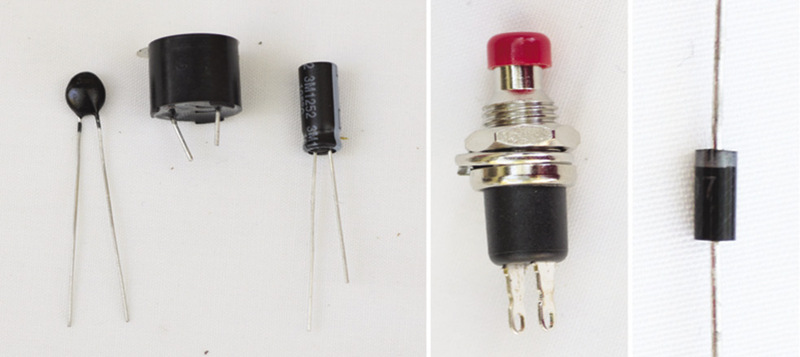

<div class="container">
  <div id="contents" class="col-md-12 main-content"><h1 xmlns="http://www.w3.org/1999/xhtml" id="toc-id-16">Electronic components 1</h1>
    <p xmlns="http://www.w3.org/1999/xhtml" class="x--Body-opener">In this chapter, you will learn about
    electronic systems and about components in electronic circuits.
    You will also learn about the following control devices:
    switches, diodes and transistors. Finally, you will make a
    simple transistor circuit. An electric circuit consists of an
    energy source and conductors. Conductors connect components
    such as input, output and process devices to create a path for
    the electrons to flow to and from the source of energy.
    Insulators are used to keep the components from
    short-circuiting.</p>

    <figure xmlns="http://www.w3.org/1999/xhtml">
    <p class="x--Body-opener"><span></span> </p>
<figcaption>
    <p class="x--caption">Figure 1: A few examples of electronic
    components that we will deal with in this chapter</p>
</figcaption></figure>
    <h2 xmlns="http://www.w3.org/1999/xhtml" id="toc-id-17">Switches</h2>

    <p xmlns="http://www.w3.org/1999/xhtml" class="x--Body-Text">A switch controls the electric current
    by closing or opening the circuit. There are various types of
    switches that control the circuit in different ways. In this
    lesson, you will learn about manual switches that a user can
    turn on or off.</p>

    <p xmlns="http://www.w3.org/1999/xhtml" class="x--Body-investigation-hanging">1. Think about
    different switches that you use daily and list them here:</p>
    <hr xmlns="http://www.w3.org/1999/xhtml"/> <p xmlns="http://www.w3.org/1999/xhtml" class="x--Head-C para-style-override-2"><b>Push button
    switch</b></p>

    <p xmlns="http://www.w3.org/1999/xhtml" class="x--Body-text-1-3 para-style-override-27">Push button
    switches are often used for doorbell circuits, as in Figure 2.
    This simple doorbell circuit consists of cells in series, a
    push button and a buzzer, all connected by conducting wire. A
    person visiting the house presses the button for a short time
    and then releases it.</p>

    <figure xmlns="http://www.w3.org/1999/xhtml">
      <div class="frame-7"></div>

      <figcaption>
        <p class="x--caption">Figure 2: A simple doorbell
        circuit</p></figcaption>
      </figure>
    

    <p xmlns="http://www.w3.org/1999/xhtml" class="x--Body-investigation-hanging--1-3- para-style-override-29">2.
    Draw the circuit diagram of the doorbell circuit in the
    photograph. Use the correct circuit diagram symbols. Note that
    the cells are in series.</p>
       <b xmlns="http://www.w3.org/1999/xhtml">Single-pole,
    single-throw switch (SPST)</b><p xmlns="http://www.w3.org/1999/xhtml" class="x--Body-Text"><span></span> </p>
<figcaption xmlns="http://www.w3.org/1999/xhtml">
    <p class="x--caption">Figure 3: The symbol for an SPST
    switch</p>
</figcaption><p xmlns="http://www.w3.org/1999/xhtml" class="x--Body-Text"><span></span> </p>
<figcaption xmlns="http://www.w3.org/1999/xhtml">
    <p class="x--caption">Figure 4: A typical light circuit with
    anenergy source, switch and lamp</p>
</figcaption><b xmlns="http://www.w3.org/1999/xhtml">Single-pole, double-throw switches
    (SPDT)</b>ice 1 in one position and device 2 in the other
    position. There is no "off" position for this switch.<div xmlns="http://www.w3.org/1999/xhtml" class="frame-7"></div>

      <figcaption xmlns="http://www.w3.org/1999/xhtml">
        <p class="x--caption">Figure 5: The symbol for an SPDT
        switch</p>
      </figcaption>

    <p xmlns="http://www.w3.org/1999/xhtml" class="x--Body-Text"><span></span> </p>
<figcaption xmlns="http://www.w3.org/1999/xhtml">
    <p class="x--caption">Figure 6: A circuit with a battery, two
    lamps and an SPDT switch controlling two outputs</p>
</figcaption><p xmlns="http://www.w3.org/1999/xhtml" class="x--Body-investigation-hanging"><span></span> </p>
<figcaption xmlns="http://www.w3.org/1999/xhtml">
    <p class="x--caption">Figure 7: A circuit with two SPDT
    switches is often used to control a lamp with one switch at
    each end of a long passage. It is also used to control a lamp
    with one switch at the bottom of a staircase, and the other
    switch at the top of the staircase.</p>
</figcaption><p xmlns="http://www.w3.org/1999/xhtml" class="x--Body-Text"><span></span> </p>
<figcaption xmlns="http://www.w3.org/1999/xhtml">
    <p class="x--caption">Figure 8</p>
</figcaption><span xmlns="http://www.w3.org/1999/xhtml" class="char-style-override-7"><i>opposite</i></span> direction. How can the
    direction in which the motor turns be changed? The way to do
    this is to change the direction of the current through the
    electric motor. Double-pole, double-throw switches can be used
    to reverse the direction of current through a circuit, so they
    are useful in applications such as automatic car gates. The
    circuit diagram below shows how a DPDT switch can change the
    direction of current through an electric motor.<p xmlns="http://www.w3.org/1999/xhtml" class="T-6point"><span></span> </p>
<figcaption xmlns="http://www.w3.org/1999/xhtml">
    <p class="x--caption">Figure 9: A circuit where a DPDT switch
    controls the direction in which an electric motor turns</p>
</figcaption><span xmlns="http://www.w3.org/1999/xhtml" class="char-style-override-7">opposite</span> direction when the
    current passes through it from terminal M2 to M1.<span xmlns="http://www.w3.org/1999/xhtml" class="char-style-override-7">,</span> to 4, to 2 and back to the
    negative of the battery.<li xmlns="http://www.w3.org/1999/xhtml" class="x--Body-text-bullet"> from the
      positive terminal of the battery,</li>

      <li xmlns="http://www.w3.org/1999/xhtml" class="x--Body-text-bullet"> through
      the ON/OFF switch to 1,</li>

      <li xmlns="http://www.w3.org/1999/xhtml" class="x--Body-text-bullet"> through
      the top part of the DPDT switch from 1 to 5,</li>

      <li xmlns="http://www.w3.org/1999/xhtml" class="x--Body-text-bullet"> through
      the motor from M2 to M1,</li>

      <li xmlns="http://www.w3.org/1999/xhtml" class="x--Body-text-bullet"> to 6,</li>

      <li xmlns="http://www.w3.org/1999/xhtml" class="x--Body-text-bullet"> through
      the bottom part of the DPDT switch from 6 to 2, and</li>

      <li xmlns="http://www.w3.org/1999/xhtml" class="x--Body-text-bullet"> to the
      negative terminal of the battery.</li>
    <p xmlns="http://www.w3.org/1999/xhtml" class="x--Body-Text"><span></span> </p>
<figcaption xmlns="http://www.w3.org/1999/xhtml">
    <p class="x--caption">Figure 10: A diode</p>
</figcaption><div xmlns="http://www.w3.org/1999/xhtml" class="frame-7"></div>

      <figcaption xmlns="http://www.w3.org/1999/xhtml">
        <p class="x--caption">Figure 11: Circuit symbol of a diode.
        The current <span>flow in a diode is in the direction of
        the arrow head.</span></p>
      </figcaption>
    <div xmlns="http://www.w3.org/1999/xhtml" class="frame-7"></div>

      <figcaption xmlns="http://www.w3.org/1999/xhtml">
        <p class="x--caption">Figure 12: An LED. The longer of the
        two wires coming out of the LED should be connected to the
        positive terminal, and the shorter wire to the negative
        terminal.</p>
      </figcaption>
    <div xmlns="http://www.w3.org/1999/xhtml" class="frame-7"></div>

      <figcaption xmlns="http://www.w3.org/1999/xhtml">
        <p class="x--caption">Figure 13: The circuit symbol for an
        LED.</p>
      </figcaption>
    <span xmlns="http://www.w3.org/1999/xhtml"></span>  <b xmlns="http://www.w3.org/1999/xhtml">collector</b>, <b xmlns="http://www.w3.org/1999/xhtml">base</b> and <b xmlns="http://www.w3.org/1999/xhtml">emitter</b>.<div xmlns="http://www.w3.org/1999/xhtml" class="frame-7"></div>

      <figcaption xmlns="http://www.w3.org/1999/xhtml">
        <p class="x--caption">Figure 15: One type of transistor</p>
      </figcaption>

    <p xmlns="http://www.w3.org/1999/xhtml" class="x--Body-Text"><span></span> </p>
<figcaption xmlns="http://www.w3.org/1999/xhtml">
    <p class="x--caption">Figure 16: The circuit symbol for an npn
    transistor</p>
</figcaption><b xmlns="http://www.w3.org/1999/xhtml">npn</b> transistor acts as if there
    is a switch between the collector and the emitter. With a
    positive potential on the base of the transistor, the switch is
    closed. So it is an electrically controlled switch.<p xmlns="http://www.w3.org/1999/xhtml" class="x--Body-box-no-indent">There are other types of
      transistors, for example pnp transistors that work a bit
      differently from npn transistors. But you will only work with
      npn transistors in this term.</p>
    <div xmlns="http://www.w3.org/1999/xhtml" class="frame-7"></div>

      <figcaption xmlns="http://www.w3.org/1999/xhtml">
        <p class="x--caption">Figure 17: A simple touch-switch
        circuit that will not work well</p>
      </figcaption>
    <span xmlns="http://www.w3.org/1999/xhtml" class="char-style-override-7">npn</span> transistor is a
    "control device," and the LED is the "output device".<p xmlns="http://www.w3.org/1999/xhtml" class="x--Body-box-no-indent">A transistor uses a small
      current circuit to switch on a larger current circuit. This
      is why transistors are also used in music equipment to
      "amplify" the sound.</p>
    <p xmlns="http://www.w3.org/1999/xhtml" class="x--Body-Text"><span></span> </p>
<figcaption xmlns="http://www.w3.org/1999/xhtml">
    <p class="x--caption">Figure 18: Circuit using a transistor as
    an electronic switch</p>
</figcaption><span xmlns="http://www.w3.org/1999/xhtml"> 

     </span>
    <figcaption xmlns="http://www.w3.org/1999/xhtml">

    <p class="x--caption">Figure 19: The construction of a
    touch-switch circuit with a transistor and an LED.</p>
</figcaption>
  </div>
</div>